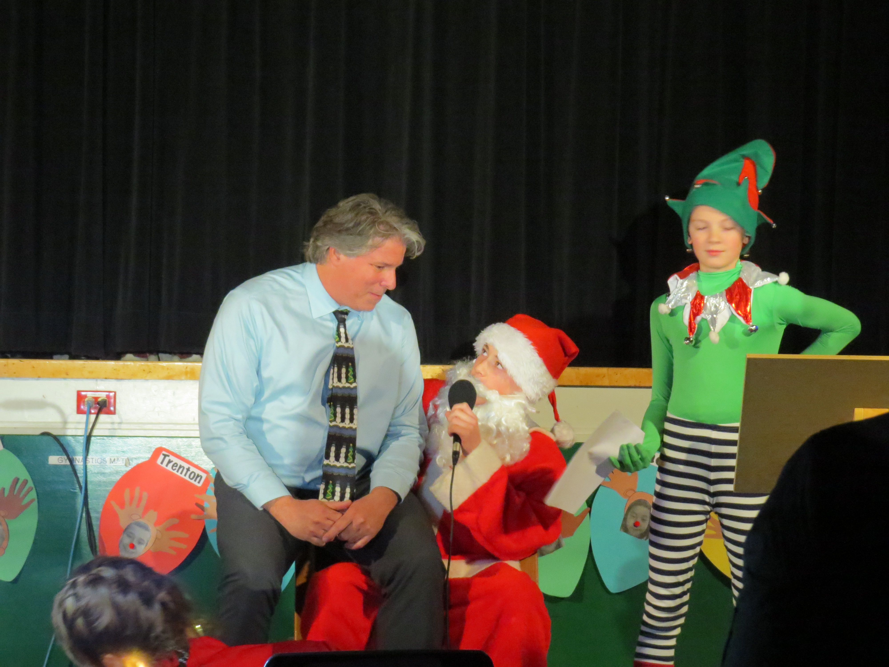
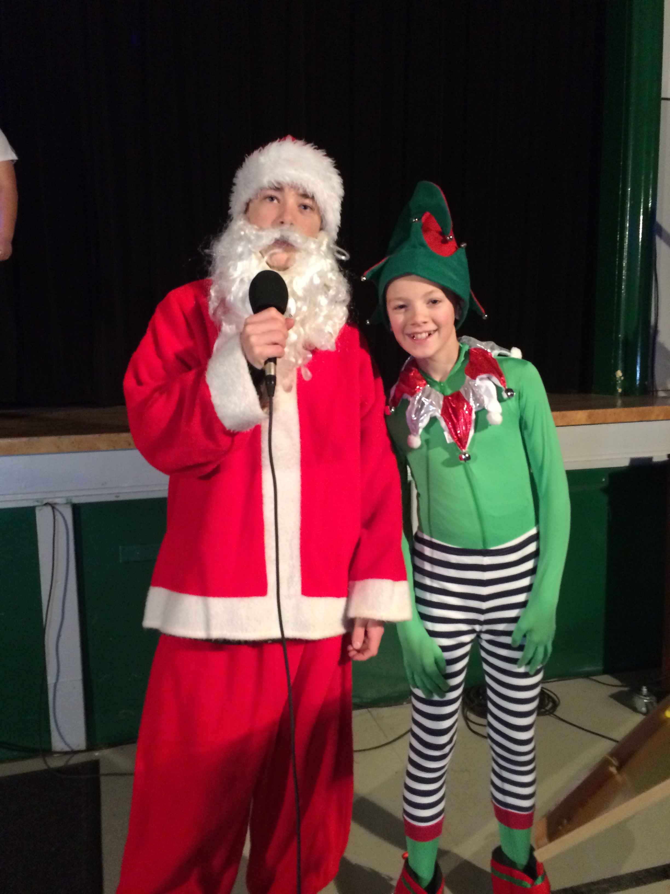
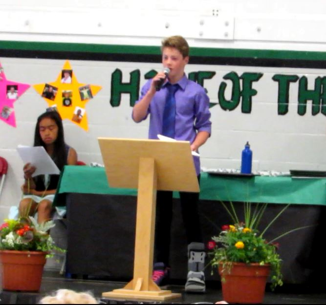

Interests
Programming
Coding is my favourite hobby. I have been doing it for about 3 years and I love it as much as I did when I started. As of right now I am proficient in 4 languages: Python, HTML, Batch and C#, but I am learning more quickly. I have made 6 big, open-source programs.
Sports | Gymnastics
Gymnastics is my favourite sport and has been for many years. I am in competitive gymnastics and I really enjoy it. I really hope to be able to represent Hugh Boyd in High School Gymnastics next year. Gymnastics is one of the hardest sports in the world and I like the challenges it throws at me. I also volunteer during varying gymnastics competitions for younger athletes.
Sports | Track and Field
Track and Field is a part of my life every spring when I join the Dixon Track and Field team. My main events are sprinting short distances and long jump. As mentioned in my achievements, I came first in the 200m sprint and 3rd in long jump at last year's BC Track and Field Championships.
Master of Ceremony
  Being a quite social and talkative guy, I love Mcing and often get chosen to MC different school events. So far my biggest opportunities have been:
~ MCing the grade 7 farewell assembly
~ And a month ago I MCed our annual Christmas concert dressed up as Santa Clause where our principal Mr. Juhazs sat on my lap to tell me his wishes.